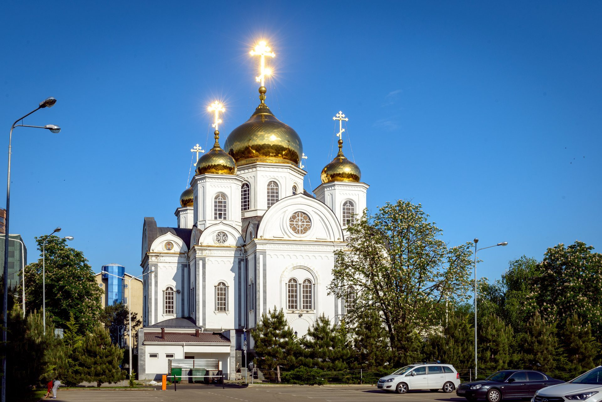

Общая информация
Распорядок служб
Богослужения в соборе совершаются ежедневно. По будням — утренние и вечерние богослужения; в субботу вечером — всенощное бдение; по воскресным и праздничным дням — Божественная литургия, а в великие праздники — две литургии (ранняя и поздняя).
Полное расписание на текущий месяц с точным временем каждой службы — на странице «Расписание». Заказ треб (молебны, панихиды, проскомидия, поминовения) принимается в свечной лавке собора и онлайн на странице «Заказ треб».
Полное расписание
на текущий месяц